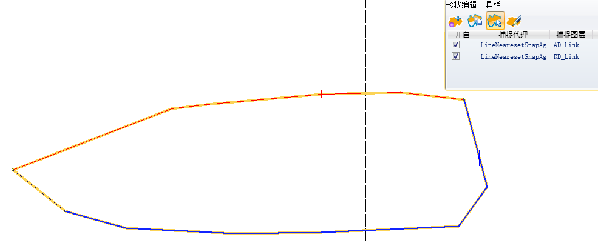
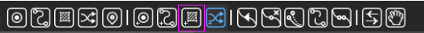
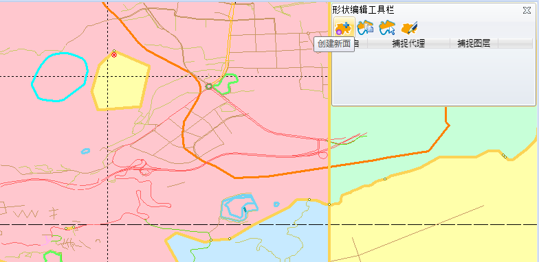
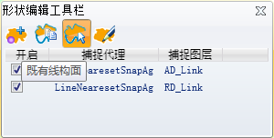
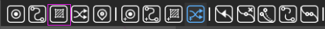
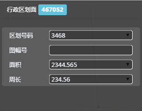
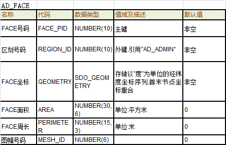

新增面

新增面
定义类型

选择行政区划点面
绘制面

创建工具栏
map界面
新增下一个点

空格保存
取消
生成数据
放弃修改
ESC
操作说明（行政区划场景下）：
1、选择新增面，默认面类型为行政区划面
3、选定新增方式默认为“绘制新面”；
4、在地图上点击左键确定新FACE起点，连续绘制直线段；
5、系统根据点击轨迹用红色实线和黑色虚线虚拟显示新FACE；
6、按空格键，完成新行政区划FACE创建
7、新FACE赋上默认属性，并用黄色面显示新创建FACE几何面；
8、继续创建其他面
取消当前面的新增：
1、点击其他工具按钮，结束当前动作，切换至其他动作
2、保存前，按键盘的“Esc”，回退至上一动作
3、点击属性栏取消，放弃当前新增动作
实时控制：
1、背景link不能自相交
2、闭合的线才能生成面
业务要求：
1、新增面的过程中，程序自动生成行政区划线和行政区划点（起点位置）；
2、新增面如果穿过图框线，则自动分割成多个面，并在图框线处生成行政区划假象线；
3、组成面的link序号程序自动维护，维护原则：从1开始，逆时针方向+1递增编号；
4、FACE坐标（GEOMETRY）：逆时针显示形状点坐标；
5、新增面的方式分为曲线构面和既有线构面的方式，默认是曲面构面
直接绘制新面
新增面
定义类型
选择行政区划面
既有线构面
创建工具栏
map界面

空格保存
取消
生成数据
放弃修改
既有线构面

ESC
操作说明（行政区划场景下）：
1、选择新增面，默认面类型为行政区划面
3、选定新增方式为“既有线构面”；
4、在地图上点击左键确定新FACE起点，连续绘制直线段；
5、系统根据点击轨迹用红色实线和黑色虚线虚拟显示新FACE；
6、按空格键，完成新行政区划FACE创建
7、新FACE赋上默认属性，并用黄色面显示新创建FACE几何面；
8、继续创建其他面
取消当前面的新增：
1、点击其他工具按钮，结束当前动作，切换至其他动作
2、保存前，按键盘的“Esc”，回退至上一动作
3、点击属性栏取消，放弃当前新增动作

实时控制：
1、背景link不能自相交
2、闭合的线才能生成面
3、背景面Face的点不能少于3个
业务要求：
1、如果开启线捕捉功能，系统捕捉最近的行政区划线（捕捉范围系统默认）
2、如果开启点捕捉功能，系统捕捉最近的行政区划节点（捕捉范围系统默认），把新创建的FACE的起点设置为该捕捉到的节点；
3、当选中闭合环其中一条link后，可以按shift键，从而选择构成面的方式，按一下是顺时针构面，再按一下是逆时针构面，再按一下是添加既有线构成面；
3、组成面的link序号程序自动维护，维护原则：从1开始，逆时针方向+1递增编号；
4、FACE坐标（GEOMETRY）：逆时针显示形状点坐标；
在线检查：




删除
删除数据
确认
选中面
map展示

删除面

操作说明（行政区划场景下）：
1、选择新增面，默认面类型为行政区划面
2、map界面中左键选中面；
3、map界面高亮选中面；
4、当前对象列出选中面类型及ID，属性栏列出选中面的属性卡片
5、点击属性栏删除按钮，触发确认提示（提示删除造成的影响）
6、确认后删除数据
取消当前LINK的选中：
1、点中其他Link/点/icon/面时，切换至其他要素
2、按键盘的“Esc”键，退出当前面的删除
业务说明：
1、删除Node信息后属性列表中的属性信息删除，地图上删除几何要素
2、删除Node信息相关的检查错误信息

